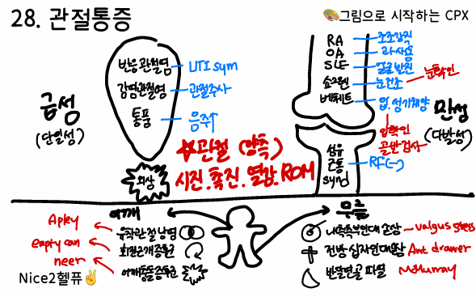
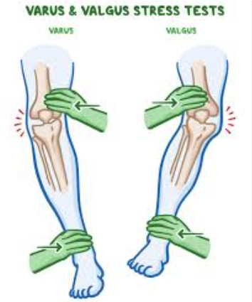
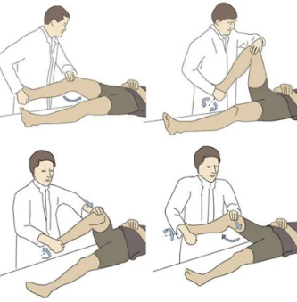
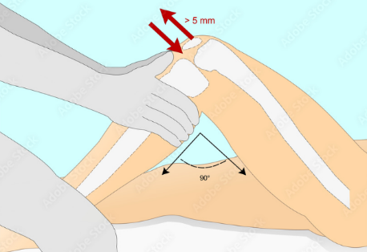
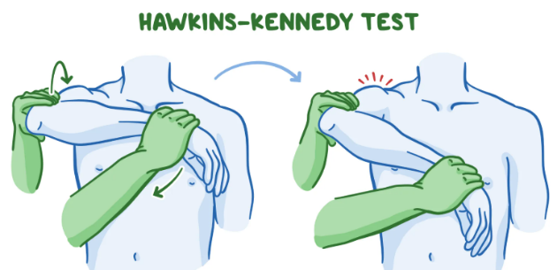
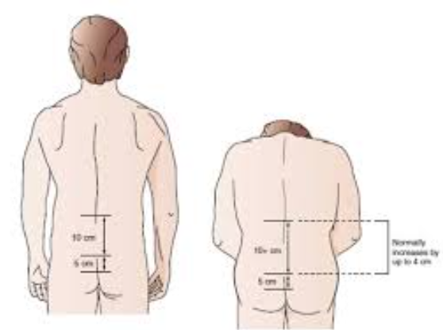
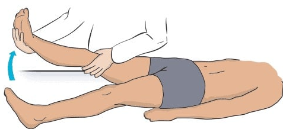

25. 관절통증/부종

원인 | |||
관절 | 염증성 - 단일관절: 감염관절염 - 다발관절: 류마티스관절염 비염증성: 골관절염, 외상 | ||
관절 외 | 전신성: 섬유성근육통 국소성: 근막통증질환 | ||
평가목표 1) 병력청취와 신체진찰로 관절통/관절부기의 원인 감별 2) 필요한 환자교육 시행 3) 적절한 진단 및 치료 계획 수립 | |||
구체적인 성과 | |||
병력 청취
| 통증/부기의 주요 특성 | Onset: 급성<6주<만성, 갑자기/서서히, 상황 - 아침/저녁, 활동 시 Location: 위치, 양측성, 통증의 이동, 방사통 Duration: 지속시간/조조강직 (골관절염<1시간<류마티스) Character: 압통/발적/종창/열감/비빔소리/운동 제한 | |
| 동반 증상과 위험 요인 | Associated Sx [전신] 발열/오한/체중 감소/피로 [류마티스] 호흡곤란 [쇼그렌] 눈/입 마름 [베체트] 구강궤양/성기궤양/안구 충혈+통증 [루푸스] 피부발진/햇빛 알러지/레이노(루푸스, 쇼그렌) [반응 관절염] 배뇨통/설사/감기 기운 [섬유근통] 수면장애/불안/우울/인지기능 저하 [골관절염] 키/몸무게 | |
|
| Factor: 사용빈도/휴식/자세/과음/해당 관절 주사 | |
신체 진찰 | 관절의 상태를 확인하는 신체진찰 | [관절 시진] 발적, 부종, 결절, 변형 [관절 촉진] 압통, 열감, 불안정성, 잠김현상 [관절 청진] 비빔소리 [운동검사] 능동->수동->저항 반드시 양측 비교 | |
| 원인을 감별하기 위한 신체진찰 | [눈] 포도막염 [입] 구강 궤양 - 베체트병, 구강 건조 - 쇼그렌 [흉부] 호흡음 청진 - 류마티스관절염 [피부] 발진 [생식기] 시진 - 베체트병 [무릎] Valgus/Varus stress test, Mcmurrary test, Drawer test [어깨] Neer test, Hawkins-kennedy test, Empty can test [허리] Schober test, SLR test, Patrick test | |
진단 및 치료 | 류마티스 관절염 | 혈청 RF, 항CCP항체, CBC, ESR, CRP 관절 X선 사진, 다른 기관 침범(눈, 심장, 폐) | DMARDs(MTX 등), NSAIDs 생물학적 제제, 스테로이드 |
| 골관절염 | 관절 X선 사진 | NSAIDs, 체중 감량, 휴식 |
| 통풍 관절염 | 관절 천자, 혈청 요산 | NSAID, 콜히친, 스테로이드 Allopurinol (2차 예방 목적) |
| 쇼그렌 증후군 | Schimer’s test, anti-Ro/La, 침샘 스캔 | NSAID, Hydroxychloroquine, 인공눈물, 수분 보충 |
| 베체트병 | CBC, ESR, CPR, skin pathergy test | 콜히친, 스테로이드, 생물학적 제제 |
| 루푸스 관절염 | 항핵항체, 항dsDNA항체, CBC, 소변검사 보체검사 | Hydroxychloroquine, NSAID, Cyclophosphamide, 스테로이드 |
| 섬유근통증후군 | 배제 진단 | 충분한 수면 및 식사, 운동치료, 항우울제 |
| 강직척추염 | HLA-B27, 골반 방사선 촬영 | 재활 및 운동 치료, NSAID, 생물학적 제제 |
| 감염 관절염 | 관절 천자, 관절액 배양, 단순 방사선 촬영 | 항생제 |
| 반응 관절염 | 관절 천자, 단순 방사선 촬영, HLA-B27 | NSAIDs, 스테로이드, Azathioprine Methotrexate |
| 회전근개 증후군 | 관절 X선 사진/MRI, 관절 초음파 | NSAIDs, 스트레칭 및 운동, 수술 |
| 내측 측부인대 손상 | 관절 X선 사진/MRI | 휴식, NSAIDs, 부목 고정, 수술 |
환자교육 | 약물치료 | 통증이 심하시면 진통제로 먼저 조절해보자 오남용 및 부작용의 위험이 있으니 반드시 용법에 맞춰 복용할 것 스테로이드 주사는 감염을 유발할 수 있으니 자주 맞지말 것 | |
| 생활습관 교육 |
| |
질환 | 질환 설명 | 병력청취 | 신체진찰 | 검사 | 치료 | |
급성 < 6주 | ||||||
감염
| 통풍 0+1 | 몸에 요산이 쌓여서 관절을 찌르고 염증 발생 | 반복적인 급성 통증 단일 관절염 (엄지발가락) 과음, 과식의 사회력 | 관절 압통, 발적, 부종 | 관절 천자, 혈청 요산 | NSAID, 콜히친, 스테로이드, Allopurinol (2차 예방 목적) |
| 가성통풍 | 관절에 칼슘 성분 결정 쌓임 | 주로 무릎이나 손목, 고령, | 관절 압통, 발적, 부종 | 관절천자, 관절 Xray | NSAID, 콜히친, 스테로이드 |
| 감염 관절염 1 | 관절 안에 세균으로 심한 통증과 붓기 | 단일 관절염, 발열, 오한 동반 관절 주사, 관절 외상의 과거력 | 관절 압통, 발적, 부종 | 관절 천자, 관절액 배양, 단순 방사선 촬영 | 항생제 |
| 반응 관절염 | 장/비뇨 감염 이후 면역 반응이 지나쳐 관절까지 통증 | 장염/비뇨기 감염(성병)의 병력 휴식 시 통증, 발열, 피로 동반 | 관절 압통, 부종, 뻣뻣함, 급성 비대칭적 관절 | 관절 천자, 단순 방사선 촬영, HLA-B27 | NSAIDs, 스테로이드, Azathioprine, Methotrexate |
| 외상 관절염 | 다친 관절이 시간이 지나 닳음 | 관절 외상력 | 관절 압통, 발적, 부종, 운동 제한 | 단순 방사선 촬영 | NSAID, 재활 및 운동 치료 |
만성 > 6주 | ||||||
자가 면역 | 류마티스 관절염 | 면역체계가 잘못 작동해 자기 관절을 공격 | MCP/PIP 관절의 다발성 침범, 대칭성, 피로감, 식욕부진 1시간 이상 조조강직 관절 외(눈, 심장, 폐, 신장) | 관절의 압통, 종창, 류마티스 결절, 특징적 손가락 변형 | 혈청 RF, 항CCP항체, CBC, ESR, CRP, 관절 X선 사진 | DMARDs(MTX 등), NSAIDs, 생물학적 제제, 스테로이드 |
| 루푸스 관절염 1+1 | 면역체계 이상으로 정상 조직을 공격 | 젊은 여성, 피부 발진, 구강궤양, 광과민성, 레이노 현상 반복적 유산력 (항인지질항체증후군) | 구강 궤양, 피부 시진, 관절 압통 탈모 | 항핵항체, 항dsDNA항체, CBC, 소변검사, 보체검사 | Hydroxychloroquine, NSAID, Cyclophosphamide, 스테로이드 |
| 쇼그렌 증후군 1 | 면역체계가 주로 침샘/눈물샘 공격 + 관절도 | 눈, 입 안 건조증, 마른기침 | 눈 마름 확인, 침샘 비대, 레이노 현상 | Schimer’s test, anti-Ro/La, 침샘 스캔 | NSAID, Hydroxychloroquine, 인공눈물, 수분 보충 |
면역 | 강직척추염 | 척추와 골반 관절에 염증, 점점 굳고 움직임이 제한 | 젊은 남성, 허리 통증, 아침에 아프고 운동하면 나아짐 포도막염, 갈비연골염 | 쇼버 검사, 흉곽 확장 감소, 패트릭 테스트 시 반대측 천장관절 통증 | HLA-B27, 골반 방사선 촬영 | 재활 및 운동 치료, NSAID, 생물학적 제제 |
| 베체트병 1 | 혈관에 염증이 생김(입/피부/눈/관절 영향) | 구강/성기 궤양, 포도막염, 피부병변 | 구강/ 성기궤양, 결절홍반, 안구 충혈 | CBC, ESR, CPR, skin pathergy test | 콜히친, 스테로이드, 생물학적 제제 |
비염증
| 골관절염 2+1 | 고령/과사용 관절의 연골이 닳는 퇴행성 질환 | 관절을 오래 쓴 고령 환자 DIP 관절, 무릎의 다발성 침범, 활동시 통증 심해짐 30분 이내로 지속되는 조조강직 |
| 관절 X선 사진 | NSAIDs, 체중 감량, 휴식 |
| 섬유근통증증후군 | 특별한 원인 없이 온몸 근육과 관절이 아픔 | Axial 주위 통증, 압통, 전신 피로, 수면장애, 인지 기능 저하, 불안, 우울 | - | 배제 진단 | 충분한 수면 및 식사, 운동치료, 항우울제 |
관절 외 | ||||||
관절낭 | 유착관절낭염(오십견) | 어깨 관절을 싸는 막이 굳고 뻣뻣해짐 | 어깨 통증, 밤에 더 심한 통증 | 어깨 관절의 능동/수동 운동 제한 | 관절 X선 사진/MRI, 관절 초음파 | 충분한 스트레칭 및 운동, 수술, 스테로이드 주사 |
힘줄 | 회전근개 증후군 1+1 | 어깨 힘줄이 뼈에 반복적으로 부딪히고 염증 | 어깨 통증, 어깨관절 운동 제한 | 어깨 관절의 능동 운동 제한 (수동 운동 정상) | 관절 X선 사진/MRI, 관절 초음파 | NSAIDs, 스트레칭 및 운동, 수술 |
| 팔꿈치 건병증 (상과염) | 골프/테니스 엘보로 팔꿈치 힘줄 손상 | 팔꿈치 안쪽/가쪽의 통증 오랜 시간 팔을 쓰는 운동을 한 환자 | 팔꿈치 밑 압통점, 손목 운동 시 통증 | 관절 X선 사진/MRI, 관절 초음파 | 휴식, 스트레칭, NSAIDs, 수술 |
연골 | 무릎연골연화증 | 무릎 앞 연골이 약해져 마찰/손상으로 통증 | 무릎 앞쪽이 뻐근, 계단 오르내릴 때 통증 | 운동시 비빔소리, 슬개골 압박검사 양성 | 관절 X선 사진/MRI | NSAID, 근력 강화 운동 |
| 반달연골 파열 | 무릎 관절 사이의 반달 모양 연골이 찢어짐 | 무릎 통증, 대퇴사두근 위축, 외상력 | 무릎 운동 제한, Mcmurray test | 단순 방사선검사, MRI, 관절경검사 | NSAID, 부목고정, 수술 |
인대 | 내측 측부인대 손상 1 | 무릎 안쪽 인대가 늘어나거나 찢어짐 | 운동 중 무릎에 가해진 외반력 (축구, 스키 등) | 무릎 내측 종창, 압통, Valgus stress test (+) | 관절 X선 사진/MRI | 휴식, NSAIDs, 부목 고정, 수술 |
| 십자인대 손상 | 무릎 중심의 십자 모양 인대가 끊어짐 | 착지/방향 전환 중 ‘뚝’하는 소리와 함께 발생한 극심한 통증 | Anterior drawer test 양성 | 관절 X선 사진/MRI | 휴식, NSAIDs, 인대재건술 |
윤활막 | 윤활막염 | 부드러운 관절 움직임 위해 윤활액 만드는 막에 염증이 생김 | 운동할수록 통증 | 관절 종창, 힘줄 부위 누를 때 압통 | ESR/CRP, MRI, 조직생검 | 휴식, 얼음 찜질, 부목 고정 |
O | [언제] 언제부터 아팠나요? [갑자기/서서히] 갑자기 아프셨나요? 서서히 아프셨나요? [상황] 어떤 상황에 통증이 있나요? 가만히/움직일 때, 아침/활동 중 | ||
L | [위치] 어디가 아픈가요? 양쪽 다 아픈가요? 아픈 관절을 전부 짚어보시겠어요? [이동] 아픈 부위가 변하나요? [방사통] | ||
D | [지속] 통증은 얼마나 지속 | ||
Co | 점점 더 심해지나요? | ||
Ex | 이전에도 이런 적 있으셨나요? 🡪 치료는? 진통제? | ||
C | 어떤 식으로 아프신가요? (개방형) 🡪 욱신/깊은 부위/관절 주변 (폐쇄형) [압통] 눌렀을 때 아픈가요? [발적] 붉어진 곳 있나요? [종창] 부어있나요? [열감] 만졌을 때 따뜻한가요? [비빔소리] 움직일 때 소리 [움직임 제한] 움직임에 제한이 있나요? [NRS] | ||
A | [전신] 발열/오한/체중 감소/피로 [류마티스] 호흡곤란 [쇼그렌] 눈/입 마름 [베체트] 구강궤양/성기궤양/안구 충혈+통증 [루푸스] 피부발진/햇빛 알러지/레이노(루푸스, 쇼그렌) [반응 관절염] 배뇨통/설사/감기 기운 [섬유근통] 수면장애/불안/우울/인지기능 저하 [골관절염] 키/몸무게 | [전신] 발열/오한/피로/체중감소, 키/몸무게 [호흡기] 호흡곤란/감기기운 [소화기] 설사 [비뇨기] 배뇨통 [피부] 피부발진/햇빛 알러지/레이노 [정신] 우울/불안 [눈,입] 안구 충혈/통증/건조, 구강 건조/궤양 | |
F | 휴식/활동 중? 그 관절을 많이 사용하시나요? r/o 골관절염 전날 과음했나요? r/o 통풍 관절 스테로이드 주사/침? r/o 감염 관절염 | ||
E | 마지막 건강검진? 골다공증? | ||
외 | 관절 다친 적/ 수술력 | ||
과 | 현재 앓고 계신 질환이 있나요? HTN/DM/TB/간염 | ||
약 | 복용중인 약물? | ||
사 | 기본: 음주/흡연/직업 + 운동 --> 관절에 무리가 갈만한 작업/운동을 하시나요? | ||
가 | 관절염 / 류마티스 질환 | ||
여 | [월경] 규칙/주기/양/통 [산과력] 유산 루푸스, 임신계획 | ||
PEx | 기본 | V/S 확인 (혈압, 맥박, 호흡수, 체온) 1 눈 : 빈혈/포도막염 베체트, 강직척추염, 쇼그렌 2 입 : 탈수/궤양 베체트, 루푸스, 쇼그렌 3 피부 : 발진 류마티스 관절염, 루푸스, 베체트 / 성기 궤양 >> 외음부진찰로 옮기기? r/o 베체트 | |
| 관절 (양측 비교) r/o 관절 or 관절 외 | [시진] “양쪽 무릎 걷어주세요" -> 발적/부종/결절/변형 [촉진] 압통/열감/불안정/잠김 [청진] “무릎 움직일 때 소리나나요? -> 한번 들어볼까요? 움직여보세요” 비빔소리 (청진기 대고 수동 운동) [운동] (양측) 능동: 혼자서 움직여보기/수동 : 내가 움직여보기/저항: 미는 방향 반대로 힘주기 능동이 괜찮으면 수동 스킵해도 괜찮다 - 무릎: 침대 걸터앉아 Ext -> 엎드려서 Flex -> 똑바로 누워서 특이 검사 - 어깨: 앞으로 나란히, 만세, 팔벌려 자세하며 어깨 돌리기 | |
| 특이 | [무릎] 건측부터 Neer test-어깨 염증 “어깨 나란히 -> thumbs up -> thumbs down -> (능동) 양측 팔 올려보세요 -> (수동) 제가 올려볼게요” [허리] | |
| 흉부(종칠때까지) | 호흡음 청진 류마티스, 루푸스, 강직척추염 | |










진단 |
| |
검사 | 기본 | 관절부위 X-ray + 흉부엑스레이 혈중 항체 검사 혈중 염증 수치 |
| 특이 | [통풍, 가성통풍] 관절액 천자 [관절 외] MRI [쇼그렌] 침샘 검사, 시머 테스트-눈물이 잘 나오는 지 검사 |
치료 | 통증 조절 : 소염진통제 감염 : 항생제 쇼그렌 : 인공눈물/수분 보충 섬유근육통증 증후군 : 항우울제 류마티스 질환 : 스테로이드, 면역 조절 관절 외 질환 : 재활, 스트레칭, 휴식, 수술 | |
교육 | 통증조절) 통증이 심하시면 진통제로 먼저 조절해보자 오남용 및 부작용의 위험이 있으니 반드시 용법에 맞춰 복용할 것 스테로이드 주사는 감염을 유발할 수 있으니 자주 맞지말 것 진통제 먹어봤는데 효과 없다고 할때) 용법/용량 준수 여부: "혹시 아플 때만 불규칙하게 드시진 않았나요? 관절염 약은 혈중 농도가 일정하게 유지되어야 염증 조절 효과가 제대로 나타납니다." 약물 작용 시간: "이 약은 효과가 나타나기까지 보통 1~2주 정도 꾸준히 복용해야 염증이 가라앉기 시작합니다." 생활 습관과의 연관성: "약을 드시면서도 관절에 무리가 가는 행동(무거운 짐 들기, 무리한 운동 등)을 반복하면 약효가 가려질 수 있습니다." 생활습관 교육) [골관절염] 체중 부하를 줄이기 위해 체중감량할 것 [류마] 금연- 담배가 류마위험인자 [루푸스] 임신계획시 꼭 치료 루푸스로 유산 가능 [쇼그렌] 인공눈물+충치예방 구강관리 과도한 사용으로 증상이 유발되고 있을 경우, 관절이 회복할 동안 휴식을 취할 것 관절에 무리가 가지 않는 선에서 의사가 허용하는 스트레칭 및 운동(수영)을 꾸준히 할 것 음주 및 흡연은 통증을 악화할 수 있으므로 금주, 금연할 것
| |
① 준비 및 시진 (30초)
의사: "어깨를 좀 확인해 보겠습니다. 환부 노출을 위해 환자복을 조금 내려도 될까요? (동의 후) 양쪽 어깨 높이가 대칭인지, 붉게 부어오르거나 근육이 마른 곳은 없는지 확인하겠습니다."
포인트: 양측 어깨를 동시에 보며 발적, 부종, 결절, 변형을 확인합니다.
② 촉진 (30초)
의사: "제가 어깨 주변을 눌러볼 건데, 아프시면 말씀하세요." (건측부터 시작)
동선: 빗장뼈(쇄골) -> 어깨 봉우리 -> 어깨 관절 앞뒤를 꾹꾹 누릅니다.
의사: "열감이 있는지 확인하겠습니다." (손등으로 양쪽 어깨 체온 비교)
③ 관절 가동 범위 (ROM) 확인 (1분) - 가장 중요
의사: "이제 제 동작을 따라 해 보세요. 아프면 바로 멈추세요."
굴곡/외전: "앞으로 나란히 해서 만세~ 옆으로 벌려서 만세~"
내회전/외회전: "열중쉬어 자세에서 손을 등 위로 올려보시고, 다음엔 머리 뒤로 깍지 껴보세요."
④ 특이 검사 (1분) - 회전근개 및 충돌 증후군 의심 시
[무릎]
① 준비 및 시진 (30초)
의사: "무릎 상태를 확인하기 위해 바지를 무릎 위까지 걷어주실 수 있을까요? (동의 후) 양쪽 무릎을 비교하며 붉게 부어오른 곳(발적/부종)이나 변형된 곳이 있는지 확인하겠습니다."
포인트: 반드시 양측을 동시에 노출시켜 비교합니다.
② 촉진 및 청진 (1분)
의사: "제가 무릎 주변을 눌러보겠습니다. 아픈 곳이 있으면 말씀해 주세요."
동선: 무릎뼈(슬개골) 주변 -> 안쪽/바깥쪽 관절선(Joint line)을 꾹꾹 누릅니다.
의사: "손등으로 양쪽의 온도를 비교해 보고(열감 확인), 혹시 흔들거림이 있는지 보겠습니다."
청진: "무릎을 굽혔다 펼 때 소리가 나는지 들어보겠습니다." (청진기를 무릎에 대고 환자에게 다리를 움직이게 함)
③ 관절 가동 범위 (ROM) 확인 (30초)
의사: "다리를 끝까지 쭉 펴보시고, 이제 가슴 쪽으로 최대한 굽혀보세요." (능동 ROM)
의사: "제 손에 힘을 빼시면 제가 직접 움직여보겠습니다." (수동 ROM)
판단: 끝범위에서 통증이 있는지, 운동 제한이 있는지 확인합니다.
④ 특이 검사 (1분 30초) - 가장 효율적인 콤보 순서
눕힌 상태에서 다리 각도를 조금씩 조절하며 이어갑니다.
[손가락]
① 시진 (30초)
의사: "양손을 손등이 보이게 책상 위에 올려보시겠어요? 다음엔 손바닥이 보이게 뒤집어보세요."
포인트:
② 촉진 (1분)
의사: "제가 마디마디를 눌러보겠습니다. 아프시면 말씀하세요."
③ 운동 범위(ROM) 및 기능 확인 (30초)
의사: "주먹을 꽉 쥐어보시고, 이제 손가락을 최대한 쫙 펴보세요."
의사: "제 손가락을 한번 꽉 잡아보시겠어요?" (악력 확인)
④ 전신 질환 감별을 위한 추가 진찰 (30초)
손가락 통증은 전신 자가면역 질환의 일부일 수 있습니다.